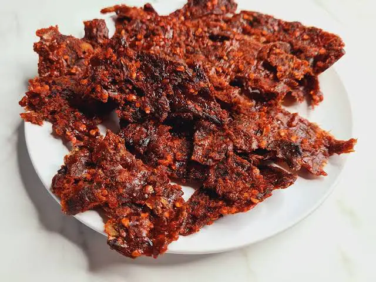

Kilishi (Nigerian Beef Jerky)

Description
Kilishi (also Kilichi) is the spicy Nigerian Beef Jerky, another gift from Northern Nigeria. This is one of those Nigerian snacks that you can eat till your chin pain you yet you will not want to stop.
Ingredients
- 10 pieces wafer-thin beef
- 1 tablespoon suya spice (suya pepper)
- 3 cloves of garlic
- 1 teaspoon cloves (Kanafuru)
- A small piece of ginger
- 1 small stock cube
- ¼ teaspoon salt
- 1 teaspoon dry cayenne pepper seeds
Steps
- Grind the cloves with a dry mill and set aside.
- Peel the garlic and ginger and pound/grind into a smooth paste.
- Add the ground cloves and crushed stock cubes to the garlic and ginger paste.
- And some water, stir and sieve to get an extract of these spices and seasoning.
- Add the suya spice and cayenne pepper seeds to the solution, stir and set aside.
- Cut the beef into very thin fillets if it has not been done for you by the butchers.
- Cut off all traces of fat from the beef.
- Set your oven to 250°C (475F) or Gas Mark 9 to preheat. If your oven temperature settings are not up to these, use the highest possible setting but this means that your own drying times will change. If your oven has a fan, turn it on as well because it helps dry the beef faster.
- Sprinkle a tiny quantity of salt on the fillets of beef and spread them around. You only need a tiny quantity and you can skip salt altogether.
- Line your oven tray with a baking sheet and lay the pieces of beef flat on it.
- Put the tray of beef into the oven and bake for 15 minutes. Flip the beef every 5 minutes for even drying.
- After 15 minutes, bring out the beef from the oven and brush the Kilishi all over them, making sure that both sides of the beef are well covered.
- Put them back in the oven and bake for additional 10 to 15 minutes. Flip them from time to time and this time, keep a very good eye on it else it will become bone dry. You want it dry and chewy not crunchy.
Please note that the Kilishi will become drier when it has cooled down completely so bear this in mind when deciding the time to bring it out of the oven.
Serve with more pepper (if you wish) and a chilled drink.